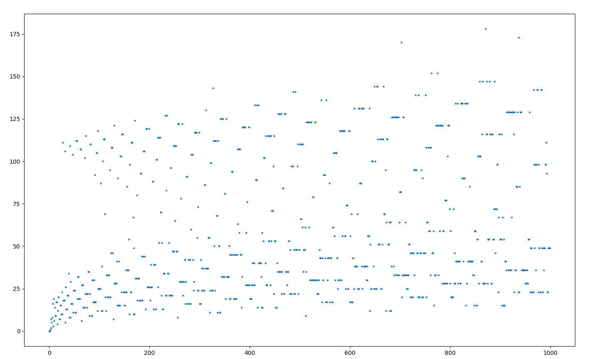

02 February 2019
The Collatz Conjecture is a problem posed by L. Collatz in 1937. Take a positive integer. If it is even, divide it by two. If it is odd, multiply by 3 and add 1. The conjecture states that if you iterate this process for any positive integer, you will always reach 1. So if we take the function:
f(x) = \begin{cases} \frac{x}{2} \qquad \text{for } x \text{ even} \\ 3x+1 \quad \text{for } x \text{ odd} \end{cases}
and iterate it for any positive integer n, we will always reach 1.
For example for 7, this looks like:
7 \rightarrow 22 \rightarrow 11 \rightarrow 34 \rightarrow 17 \rightarrow 52 \rightarrow 26 \rightarrow 13 \rightarrow 40 \rightarrow 20 \rightarrow 10 \rightarrow 5 \rightarrow 16 \rightarrow 8 \rightarrow 4 \rightarrow 2 \rightarrow 1
I will be using NumPy to build the
arrays. NumPy has optimized calculation routines for its fundamental
array data structure, which makes it great for scientific computing. It
can be installed via pip install numpy.
matplotlib is an awesome 2D
plotting library which we will use to visualize the data. It can
similarly be installed via pip install matplotlib.
We can write two python functions to analyze this conjecture. The
first function, collatzer() will take the positive integer
and return the number of steps it took to reach 1. The second function,
collatzer_steps(), will take the positive integer and
return the values of the iteration.
import numpy as np
def collatzer(i):
count = 0
while i > 1:
if i % 2 == 0:
i = i // 2
else:
i = (3 * i) + 1
count = count + 1
return count
def collatzer_steps(i, dtype=int):
i = int(i)
steps = [i]
while i > 1:
if i % 2 == 0:
i = i // 2
steps.append(i)
else:
i = (3 * i) + 1
steps.append(i)
if dtype == int:
return np.array(steps, dtype=np.int64)
else:
return np.array(steps, dtype=float)Note the usage of numpy arrays since they tend to be
more efficient. Also the collatzer_steps() function uses
ìnt64 type by default but can also use float.
This is because int64 overflows at very large numbers. The
outputs are as follows:
>>> from Collatz import *
>>> collatzer(7)
16
>>> collatzer_steps(7)
array([ 7, 22, 11, 34, 17, 52, 26, 13, 40, 20, 10, 5, 16, 8, 4, 2, 1])Now we are ready to analyse the conjecture. Let us look at the first 1000 numbers and see how many steps each take to reach 1.
import matplotlib.pyplot as plt
import numpy as np
from Collatz import *
from timeit import default_timer as timer
start = timer()
limit = 1000
y = np.zeros(limit, dtype=int)
x = np.arange(limit, dtype=int)
for n in x:
y[n] = collatzer(x[n])
fig, ax = plt.subplots()
ax.plot(x, y, '.', ms=4)
end = timer()
print(end-start)
plt.show()By using the timeit module, we can see that the whole
calculation took about 140ms. Here is the plot:

It looks like two streams coming from 0 and somehwere between 100-120 to meet with another. We can also see peculiarly straight horizontal lines.
For perspective, let’s plot the first million numbers, along with the
function log_{2} x. This function is
particularly interesting because for any power of 2, log_{2} x
is the number of the steps it takes to reach 1. In other words, the number 2^n reaches 1 in n
steps. Modifying the code a little bit, and using
np.savetxt() to dump the data for future use, we observe
that the operation took 147 seconds for the first million numbers.
import matplotlib.pyplot as plt
import numpy as np
from collatz import *
from timeit import default_timer as timer
start = timer()
limit = 1000000
col_y = np.zeros(limit, dtype=int)
log_y = np.zeros(limit)
x = np.arange(limit, dtype=int)
for n in x:
col_y[n] = collatzer(x[n])
log_y[n] = np.log2(x[n])
log_y[0] = 0 # because log2(0) gives -inf
fig, ax = plt.subplots()
ax.plot(x, col_y, '.', ms=2)
ax.plot(x, log_y, 'r')
end = timer()
print(end-start)
np.savetxt('collatz_plot_1M.txt', col_y, fmt='%d')
plt.show()
We can observe that the function log_{2} x acts as a lower bound for the number of steps, and the figure reaches horizontal stability except for some outliers.
Just to utilize the collatzer_steps() function, let us
see the steps a very large number takes. Since the y axis starts off
quite high and diminishes rather quickly, I will use a \log y axis.
import matplotlib.pyplot as plt
import numpy as np
from collatz import *
number = 42 ** 42
y = collatzer_steps(number, dtype=float)
x = np.arange(len(y))
fig, ax = plt.subplots()
plt.semilogy(x, y, '.', ms=4)
plt.show()